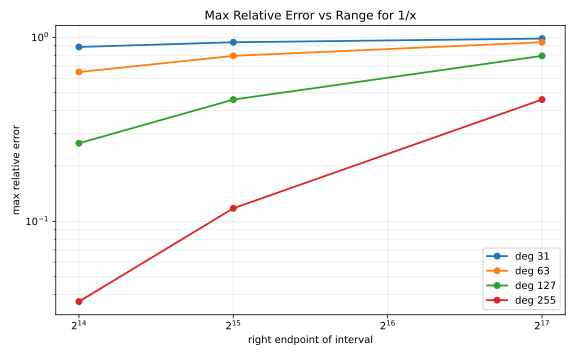
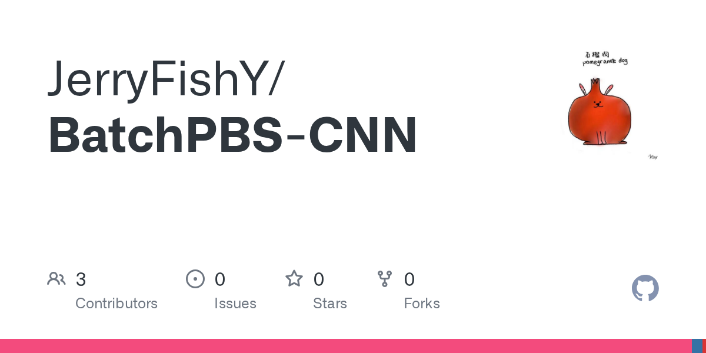

|
Ray Yu I am a researcher at Peking University interested in secure and efficient computing. My work focuses on making privacy-preserving computation practical through homomorphic encryption, high-performance systems, and hardware acceleration. I enjoy working across abstraction layers, from cryptographic primitives and numerical methods to GPU kernels and specialized architectures. I am also interested in efficient machine learning systems and encrypted inference. |
|
ResearchI am interested in fully homomorphic encryption, privacy-preserving machine learning, and systems acceleration. My current work explores programmable bootstrapping, encrypted lookup and function evaluation, and cross-layer optimization for cryptographic workloads. |
Selected Projects | |
|
 |
Segmented LUT Evaluation for Homomorphic Workloads
Ray Yu Ongoing research project, 2026 Go / Lattigo / CKKS / TFHE A multi-stage encrypted lookup pipeline with interval indexing, linear entry lookup, inverse LUT construction, and programmable bootstrapping across multiple rings. |
|
 |
BatchPBS-CNN
Ray Yu Open-source project, 2025 code Convolution and ReLU evaluation experiments for encrypted neural networks, built on the CTL-HE codebase with a focused correctness and operation-counting workflow. |
ZKP
|
Zero-Knowledge Proof Accelerator
Ray Yu Open-source hardware project, 2023 code Hardware design experiments for accelerating zero-knowledge proof workloads, exploring cryptographic arithmetic through a SystemVerilog implementation. |
|
Website template from Jon Barron's source code. |